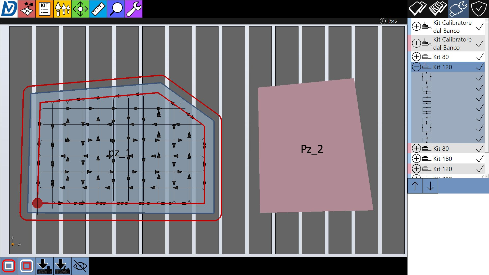
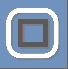
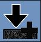
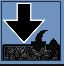

Premendo il terzo pulsante in alto a destra si passa nella fase in cui è possibile controllare i movimenti che faranno i vari utensili sul pezzo.
I pezzi vengono differenziati dal colore che, mostrato sia sul pezzo che a fianco del nome del kit permette di capire a quale pezzo si riferisce.

Selezionando il nome del kit si vedono tutte le passate di quel kit sovrapposte le une alle altre. Selezionando invece la singola passata si visualizza il percorso di quella singola passata. Premendo poi sulla destra, in corrispondenza del simbolo sulla riga, è possibile disabilitare e abilitare le singole righe
Pulsanti
 | Passaggio bordo esterno utensile |
 | Passaggio centro utensile |
 | Imposta punto di ingresso |
 | Modifica posizione punto di ingresso |